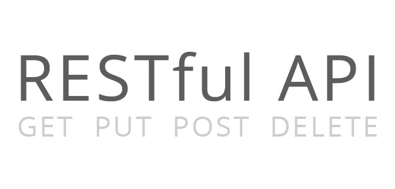
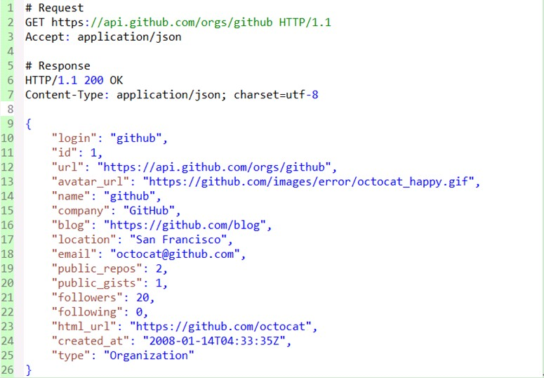
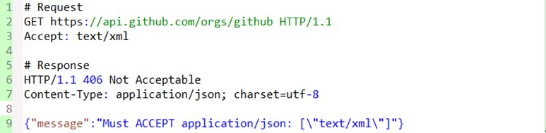

1. ¿Qué es REST?

REST son las siglas de Representational State Transfer, que en chino significa transferencia de estado representacional (nota del editor: generalmente traducido como representacional). Apareció por primera vez en la tesis doctoral de Roy Fielding en 2000, y Roy Fielding es uno de los principales autores de la especificación HTTP. En su tesis mencionó: "El propósito de este artículo es, bajo la premisa de cumplir con los principios de la arquitectura, comprender y evaluar el diseño arquitectónico de software de aplicaciones basadas en red, para obtener una arquitectura potente, de buen rendimiento y adecuada para la comunicación. REST se refiere a un conjunto de restricciones y principios arquitectónicos". Si una arquitectura cumple con las restricciones y principios de REST, la llamamos arquitectura RESTful.
REST en sí mismo no crea nuevas tecnologías, componentes o servicios; la idea detrás de RESTful es utilizar las características y capacidades existentes de la Web, aprovechando mejor algunas pautas y restricciones de los estándares web existentes. Aunque REST está profundamente influenciado por la tecnología web, en teoría el estilo arquitectónico REST no está vinculado a HTTP; solo que actualmente HTTP es el único ejemplo relacionado con REST. Por lo tanto, el REST que describimos aquí también es un REST implementado a través de HTTP.
2. Entender RESTful
Para entender la arquitectura RESTful, necesitamos entender qué significa realmente la frase Representational State Transfer y qué implicaciones tiene cada una de sus palabras.
A continuación, combinando los principios de REST, discutiremos en torno a los recursos. Desde perspectivas como la definición, obtención, representación, asociación y cambio de estado de los recursos, enumeraremos algunos conceptos clave y los explicaremos.
- Recursos y URI
- Interfaz uniforme de recursos
- Representación de recursos
- Enlaces de recursos
- Transferencia de estado
2.1 Recursos y URI
REST significa transferencia de estado representacional; ¿entonces de qué es la representación? En realidad se refiere a los recursos. Cualquier cosa, siempre que sea necesario referenciarla, es un recurso. Un recurso puede ser una entidad (por ejemplo, un número de teléfono móvil) o simplemente un concepto abstracto (por ejemplo, el valor). A continuación se muestran algunos ejemplos de recursos:
- El número de teléfono móvil de un usuario
- La información personal de un usuario
- El plan GPRS más contratado por los usuarios
- La relación de dependencia entre dos productos
- Los planes promocionales a los que un usuario puede suscribirse
- El valor potencial de un número de teléfono móvil
Para que un recurso pueda ser identificado, necesita un identificador único; en la Web, este identificador único es el URI (Uniform Resource Identifier).
Un URI puede verse tanto como la dirección del recurso como el nombre del recurso. Si cierta información no se representa mediante un URI, entonces no puede considerarse un recurso, sino solo información sobre un recurso. El diseño de los URI debe seguir el principio de direccionabilidad, ser autodescriptivo y ofrecer una asociación intuitiva en su forma. Aquí, tomando como ejemplo el sitio web de GitHub, se muestran algunos URI bastante buenos:
- https://github.com/git
- https://github.com/git/git
- https://github.com/git/git/blob/master/block-sha1/sha1.h
- https://github.com/git/git/commit/e3af72cdafab5993d18fae056f87e1d675913d08
- https://github.com/git/git/pulls
- https://github.com/git/git/pulls?state=closed
- https://github.com/git/git/compare/master…next
A continuación, veamos algunas técnicas de diseño de URI:
- Usar _ o - para que el URI sea más legible
Antiguamente, los URI en la Web eran números fríos o cadenas sin significado, pero ahora cada vez más sitios web usan _ o - para separar algunas palabras, haciendo que los URI parezcan más humanos. Por ejemplo, la comunidad china OSChina, bastante conocida, adopta este estilo en las direcciones de sus noticias, como http://www.oschina.net/news/38119/oschina-translate-reward-plan.
- Usar / para representar la relación jerárquica de los recursos
Por ejemplo, el mencionado /git/git/commit/e3af72cdafab5993d18fae056f87e1d675913d08 representa un recurso multinivel, que se refiere a un registro de confirmación (commit) del proyecto git del usuario git. Otro ejemplo: /orders/2012/10 puede usarse para representar los registros de pedidos de octubre de 2012.
- Usar ? para filtrar recursos
Muchas personas simplemente tratan ? como un paso de parámetros, lo que fácilmente hace que el URI sea demasiado complejo y difícil de entender. ? puede usarse para filtrar recursos. Por ejemplo, /git/git/pulls representa todas las solicitudes de pull del proyecto git, mientras que /pulls?state=closed representa las solicitudes de pull ya cerradas en el proyecto git. Este tipo de URL generalmente corresponde a resultados de consultas con condiciones específicas o resultados de operaciones algorítmicas.
- , o ; pueden usarse para representar la relación entre recursos del mismo nivel
A veces, cuando necesitamos representar la relación entre recursos del mismo nivel, podemos usar , o ; para dividir. Por ejemplo, si algún día GitHub pudiera comparar las diferencias de un archivo entre dos registros de confirmación arbitrarios, quizás se podría usar /git/git /block-sha1/sha1.h/compare/e3af72cdafab5993d18fae056f87e1d675913d08;bd63e61bdf38e872d5215c07b264dcc16e4febca como URI. Sin embargo, actualmente GitHub usa ... para hacer esto, por ejemplo /git/git/compare/master...next.
2.2 Interfaz uniforme de recursos
La arquitectura RESTful debe seguir el principio de interfaz uniforme. La interfaz uniforme incluye un conjunto limitado de operaciones predefinidas; sin importar qué tipo de recurso sea, se accede a él utilizando la misma interfaz. La interfaz debe utilizar métodos HTTP estándar como GET, PUT y POST, y seguir la semántica de estos métodos.
Si se exponen los recursos de acuerdo con la semántica de los métodos HTTP, la interfaz tendrá las características de seguridad e idempotencia. Por ejemplo, las solicitudes GET y HEAD son seguras: no importa cuántas veces se realicen, no cambiarán el estado del servidor. Las solicitudes GET, HEAD, PUT y DELETE son idempotentes: no importa cuántas veces se opere sobre el recurso, el resultado siempre es el mismo, y las solicitudes posteriores no producen más impacto que la primera.
A continuación se enumeran los usos típicos de GET, DELETE, PUT y POST:
GET
- Seguro e idempotente
- Obtener representación
- Obtener representación cuando cambia (caché)
- 200 (OK): indica que ya se ha enviado en la respuesta
- 204 (Sin contenido): el recurso tiene una representación vacía
- 301 (Movido permanentemente): el URI del recurso ha sido actualizado
- 303 (Ver otros): otros (por ejemplo, equilibrio de carga)
- 304 (No modificado): el recurso no ha cambiado (caché)
- 400 (Solicitud incorrecta): se refiere a una solicitud mala (por ejemplo, error de parámetros)
- 404 (No encontrado): el recurso no existe
- 406 (No aceptable): el servidor no admite la representación requerida
- 500 (Error interno del servidor): respuesta de error general
- 503 (Servicio no disponible): el servidor no puede procesar la solicitud actualmente
POST
- No seguro y no idempotente
- Crear recursos usando el número de instancia gestionado por el servidor (generado automáticamente)
- Crear subrecursos
- Actualizar parcialmente un recurso
- Si no ha sido modificado, no actualizar el recurso (bloqueo optimista)
- 200 (OK): si el recurso existente ha sido modificado
- 201 (Creado): si se ha creado un nuevo recurso
- 202 (Aceptado): se ha aceptado la solicitud de procesamiento pero aún no se ha completado (procesamiento asíncrono)
- 301 (Movido permanentemente): el URI del recurso ha sido actualizado
- 303 (Ver otros): otros (por ejemplo, equilibrio de carga)
- 400 (Solicitud incorrecta): se refiere a una solicitud mala
- 404 (No encontrado): el recurso no existe
- 406 (No aceptable): el servidor no admite la representación requerida
- 409 (Conflicto): conflicto general
- 412 (Condición previa fallida): fallo de una condición previa (por ejemplo, conflicto al realizar una actualización condicional)
- 415 (Tipo de medio no soportado): la representación recibida no está soportada
- 500 (Error interno del servidor): respuesta de error general
- 503 (Servicio no disponible): el servicio no puede procesar la solicitud actualmente
PUT
- No seguro pero idempotente
- Crear un recurso con el número de instancia gestionado por el cliente
- Actualizar el recurso mediante reemplazo
- Si no ha sido modificado, actualizar el recurso (bloqueo optimista)
- 200 (OK) - Si un recurso existente ha sido modificado
- 201 (created) - Si un nuevo recurso ha sido creado
- 301 (Moved Permanently) - El URI del recurso ha cambiado
- 303 (See Other) - Otros (por ejemplo, equilibrio de carga)
- 400 (bad request) - Se refiere a una solicitud incorrecta
- 404 (not found) - El recurso no existe
- 406 (not acceptable) - El servidor no admite la representación solicitada
- 409 (conflict) - Conflicto general
- 412 (Precondition Failed) - Falla de condición previa (por ejemplo, conflicto al ejecutar una actualización condicional)
- 415 (unsupported media type) - La representación recibida no es compatible
- 500 (internal server error) - Respuesta de error general
- 503 (Service Unavailable) - El servicio actualmente no puede procesar la solicitud
DELETE
- No seguro pero idempotente
- Eliminar recurso
- 200 (OK) - El recurso ha sido eliminado
- 301 (Moved Permanently) - El URI del recurso ha cambiado
- 303 (See Other) - Otros, como equilibrio de carga
- 400 (bad request) - Se refiere a una solicitud incorrecta
- 404 (not found) - El recurso no existe
- 409 (conflict) - Conflicto general
- 500 (internal server error) - Respuesta de error general
- 503 (Service Unavailable) - El servidor actualmente no puede procesar la solicitud
A continuación, veamos algunos problemas comunes en la práctica:
- ¿Cuál es la diferencia entre POST y PUT al crear recursos?
La diferencia entre POST y PUT al crear recursos radica en si el nombre (URI) del recurso creado lo decide el cliente. Por ejemplo, para añadir una categoría "java" a mi blog, la ruta generada sería el nombre de la categoría /categories/java, entonces se puede utilizar el método PUT. Sin embargo, muchos asocian directamente POST, GET, PUT, DELETE con CRUD, por ejemplo, en una aplicación RESTful típica implementada con rails se hace así.
Creo que esto se debe a que rails, por defecto, utiliza el ID generado por el servidor como URI, y muchas personas practican REST a través de rails, por lo que es fácil que surja este malentendido.
- No todos los clientes soportan estos métodos HTTP, ¿verdad?
Efectivamente, se da este caso, especialmente algunos clientes antiguos basados en navegador que solo pueden soportar los métodos GET y POST.
En la práctica, tanto el cliente como el servidor pueden necesitar hacer concesiones. Por ejemplo, el framework rails admite pasar el método de solicitud real mediante el parámetro oculto _method=DELETE, mientras que frameworks MVC de cliente como Backbone permiten pasar _method y configurar la cabecera X-HTTP-Method-Override para evitar este problema.
- ¿Significa la interfaz uniforme que no se pueden extender métodos con semántica especial?
La interfaz uniforme no impide que extiendas métodos, siempre que las operaciones del método sobre el recurso tengan una semántica concreta y reconocible, y puedan mantener la uniformidad de toda la interfaz.
Por ejemplo, WebDAV extiende los métodos HTTP añadiendo métodos como LOCK y UPLOCK. Y la API de GitHub admite el uso del método PATCH para actualizar issues, por ejemplo:
PATCH /repos/:owner/:repo/issues/:number
Sin embargo, hay que tener en cuenta que, para métodos que no son estándar HTTP como PATCH, el servidor debe considerar si el cliente puede soportarlo.
- ¿Qué pautas proporciona la interfaz uniforme de recursos para el URI?
La interfaz uniforme de recursos exige utilizar métodos HTTP estándar para operar sobre los recursos, por lo que el URI solo debe representar el nombre del recurso y no debe incluir operaciones sobre el recurso.
En términos sencillos, el URI no debe describirse mediante acciones. Por ejemplo, los siguientes son algunos URI que no cumplen con los requisitos de la interfaz uniforme:
- GET /getUser/1
- POST /createUser
- PUT /updateUser/1
- DELETE /deleteUser/1
Si una solicitud GET incrementa un contador, ¿viola esto la seguridad?
La seguridad no implica que la solicitud no genere efectos secundarios; por ejemplo, muchas plataformas de desarrollo de API limitan el tráfico de solicitudes. Como GitHub, que limita las solicitudes no autenticadas a 60 por hora.
Pero el cliente no envía estas solicitudes GET o HEAD para buscar efectos secundarios; la generación de efectos secundarios es una decisión unilateral del servidor.
Además, al diseñar, el servidor no debería permitir que los efectos secundarios sean demasiado grandes, porque el cliente asume que estas solicitudes no producen efectos secundarios.
- ¿Es aconsejable ignorar directamente la caché?
Incluso si usas cada verbo según su intención original, aún puedes deshabilitar fácilmente el mecanismo de caché. La forma más sencilla es añadir una cabecera así a tu respuesta HTTP: Cache-control: no-cache. Pero al mismo tiempo pierdes el soporte de caché eficiente y de revalidación (mecanismos como Etag).
Para el cliente, al implementar un cliente de programa para un servicio de estilo REST, también se deben aprovechar al máximo los mecanismos de caché existentes, para no tener que volver a obtener la representación cada vez.
- ¿Es necesario manejar los códigos de respuesta?
Los códigos de respuesta HTTP se pueden utilizar para afrontar diferentes situaciones; el uso correcto de estos códigos de estado significa que el cliente y el servidor pueden comunicarse en un nivel con una semántica más rica.
Por ejemplo, el código de respuesta 201 ("Created") indica que se ha creado un nuevo recurso, y su URI se encuentra en la cabecera de respuesta Location.
Si no aprovechas la rica semántica de aplicación de los códigos de estado HTTP, perderás la oportunidad de mejorar la reutilización, aumentar la interoperabilidad y promover el acoplamiento débil.
Si estas supuestas aplicaciones RESTful tienen que dar mensajes de error mediante el cuerpo de la respuesta, entonces SOAP ya hace eso y lo puede cumplir.
2.3 Representación de recursos
Arriba se mencionó que el cliente puede obtener recursos mediante métodos HTTP, ¿verdad? No, en realidad, el cliente obtiene solo la representación del recurso. La presentación concreta de un recurso en el exterior puede tener múltiples formas de representación (o manifestación, representación), y lo que se transmite entre el cliente y el servidor es también la representación del recurso, no el recurso en sí. Por ejemplo, un recurso de texto puede adoptar formatos como html, xml, json; y las imágenes pueden mostrarse en PNG o JPG.
La representación de un recurso incluye datos y metadatos que describen los datos; por ejemplo, la cabecera HTTP "Content-Type" es un atributo de metadatos de este tipo.
Entonces, ¿cómo sabe el cliente qué forma de representación ofrece el servidor?
La respuesta es que, mediante la negociación de contenido HTTP, el cliente puede solicitar una representación en un formato específico con la cabecera Accept, y el servidor le indica al cliente la forma de representación del recurso mediante Content-Type.
Tomando github como ejemplo, para solicitar la representación en formato json de un recurso de organización:

Si github también pudiera soportar el formato de representación xml, el resultado sería así:

A continuación, veamos algunos diseños comunes en la práctica:
Incluir el número de versión en la URI
Algunas API incluyen el número de versión en el URI, por ejemplo:
- http://api.example.com/1.0/foo
- http://api.example.com/1.2/foo
- http://api.example.com/2.0/foo
Si entendemos el número de versión como diferentes formas de representación del recurso, entonces deberíamos usar una sola URL y distinguir mediante la cabecera Accept. Volviendo a github como ejemplo, el formato completo de su Accept es: application/vnd.github[.version].param[+json]
Para la versión v3, sería Accept: application/vnd.github.v3. Para el ejemplo anterior, de manera similar se puede usar la siguiente cabecera:
- Accept: vnd.example-com.foo+json; version=1.0
- Accept: vnd.example-com.foo+json; version=1.2
- Accept: vnd.example-com.foo+json; version=2.0
Usar sufijos de URI para distinguir formatos de representación
El framework rails, por ejemplo, admite el uso de /users.xml o /users.json para distinguir diferentes formatos. Este método es sin duda más intuitivo para el cliente, pero confunde el nombre del recurso con su forma de representación. Personalmente, creo que se debería priorizar el uso de la negociación de contenido para distinguir los formatos de representación.
Cómo manejar formatos de representación no soportados
Cuando el servidor no admite el formato de representación solicitado, ¿qué se debe hacer? Si el servidor no lo admite, debería devolver una respuesta HTTP 406, que indica que rechaza procesar la solicitud. A continuación, tomando github como ejemplo, se muestra el resultado de solicitar un recurso en representación XML:

2.4 Enlaces de recursos
Sabemos que REST utiliza métodos HTTP estándar para operar sobre los recursos, pero sería demasiado simple entenderlo simplemente como una arquitectura de base de datos web con CRUD.
Este antipatrón ignora un concepto central: "el hipermedia como motor del estado de la aplicación (hypermedia as the engine of application state)". ¿Qué es el hipermedia?
Cuando navegas por páginas web, saltas de un enlace a una página, y de otro enlace a otra página, estás utilizando el concepto de hipermedia: enlazar los recursos uno tras otro.
Para lograr este objetivo, se requiere añadir enlaces en el formato de representación para guiar al cliente. En el libro RESTful Web Services, el autor denomina a esta característica de tener enlaces como conectividad. A continuación, veamos algunos ejemplos concretos.
Lo que se muestra a continuación es una solicitud para obtener la lista de proyectos de una organización en GitHub. Se puede ver que en el encabezado de respuesta se añade el encabezado Link para indicar al cliente cómo acceder a los registros de la siguiente página y de la última página. Y en el cuerpo de la respuesta, se utilizan URL para enlazar al propietario del proyecto y a la dirección del proyecto.

Otro ejemplo es el siguiente: después de crear un pedido, se guía al cliente mediante enlaces sobre cómo realizar el pago.

Los ejemplos anteriores muestran cómo utilizar hipermedia para mejorar la conectividad de los recursos. Muchas personas, al diseñar arquitecturas RESTful, dedican mucho tiempo a buscar URI bonitas e ignoran la hipermedia. Por lo tanto, deberían dedicar más tiempo a proporcionar enlaces en las representaciones de los recursos, en lugar de centrarse únicamente en las operaciones CRUD de los recursos.
2.5 Transferencia de estado
Con la base anterior, resulta muy fácil entender la transición de estado en REST.
Sin embargo, primero hablemos del principio de comunicación sin estado dentro de los principios REST. A primera vista, parece contradictorio: si no hay estado, ¿de dónde surge la transición de estado?
En realidad, el principio de comunicación sin estado aquí no significa que la aplicación cliente no pueda tener estado, sino que el servidor no debe guardar el estado del cliente.
2.5.1 Estado de aplicación y estado de recurso
En realidad, el estado debe distinguir entre estado de aplicación y estado de recurso. El cliente es responsable de mantener el estado de aplicación, mientras que el servidor mantiene el estado de recurso.
La interacción entre el cliente y el servidor debe ser sin estado, e incluir en cada solicitud toda la información necesaria para procesar dicha solicitud.
El servidor no necesita conservar el estado de aplicación entre solicitudes; solo cuando recibe una solicitud real, el servidor presta atención al estado de aplicación.
Este principio de comunicación sin estado permite que el servidor y los intermediarios comprendan solicitudes y respuestas independientes.
En múltiples solicitudes, el mismo cliente ya no necesita depender del mismo servidor, lo que facilita la implementación de servidores altamente escalables y de alta disponibilidad.
Pero a veces realizamos diseños que violan el principio de comunicación sin estado, como el uso de cookies para rastrear el estado de sesión de un servidor, por ejemplo, el JSESSIONID en J2EE.
Esto significa que las cookies que el navegador envía con cada solicitud se utilizan para construir el estado de sesión.
Por supuesto, si las cookies guardan información que el servidor puede verificar sin depender del estado de sesión (como tokens de autenticación), dichas cookies también cumplen con los principios REST.
2.5.2 Transferencia del estado de aplicación
La transición de estado ya es fácil de entender aquí: el estado de "sesión" no se guarda en el servidor como estado de recurso, sino que el cliente lo rastrea como estado de aplicación. El estado de aplicación del cliente cambia bajo la guía de la hipermedia proporcionada por el servidor. El servidor, mediante hipermedia, indica al cliente qué estados posteriores puede alcanzar desde el estado actual.
Enlaces como "página siguiente" cumplen esta función de avanzar el estado: te guían sobre cómo pasar del estado actual al siguiente estado posible.
3. Resumen
Actualmente, en proyectos como la versión XXX de Guangdong y XXX, se utilizan servicios web tradicionales de tipo RPC y SOAP, mientras que el backend del proyecto XXXX de la Base Sur de Móvil, aunque utiliza formato JSON para la interacción, sigue siendo de estilo RPC. Este artículo intenta comprender rápidamente los conceptos detrás de la arquitectura RESTful desde las perspectivas de definición, obtención, representación, asociación y transición de estado de los recursos. La arquitectura RESTful difiere considerablemente en filosofía de los métodos tradicionales como RPC y SOAP. Espero que este artículo sea de ayuda para que todos comprendan REST.
Haz clic para compartir notas
<p style="font-size:14px;">¡La nota debe ser una extensión del contenido de este artículo!</p><br> <p style="font-size:12px;"><a href="../tougao.html" target="_blank">Envío de artículos, haga clic aquí</a></p> <p style="font-size:14px;"><a href="./runoob-user-test-intro.html" target="_blank">Cómo obtener el código de invitación de registro</a></p> <h3 class="text-muted"><i class="fa fa-info-circle" aria-hidden="true"></i> Antes de compartir notas, debe <a href=".." class="runoob-pop">iniciar sesión</a>.</h3> <p><a href="./runoob-user-test-intro.html" target="_blank">Cómo obtener el código de invitación de registro</a></p>